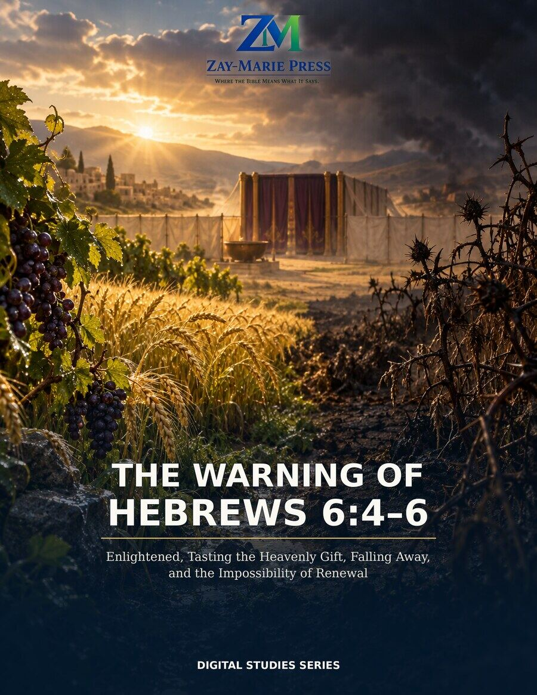
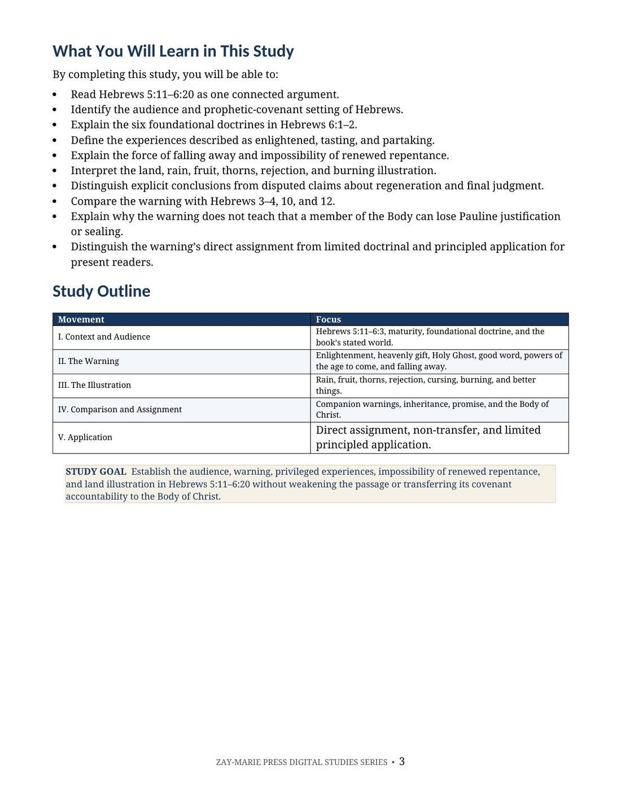
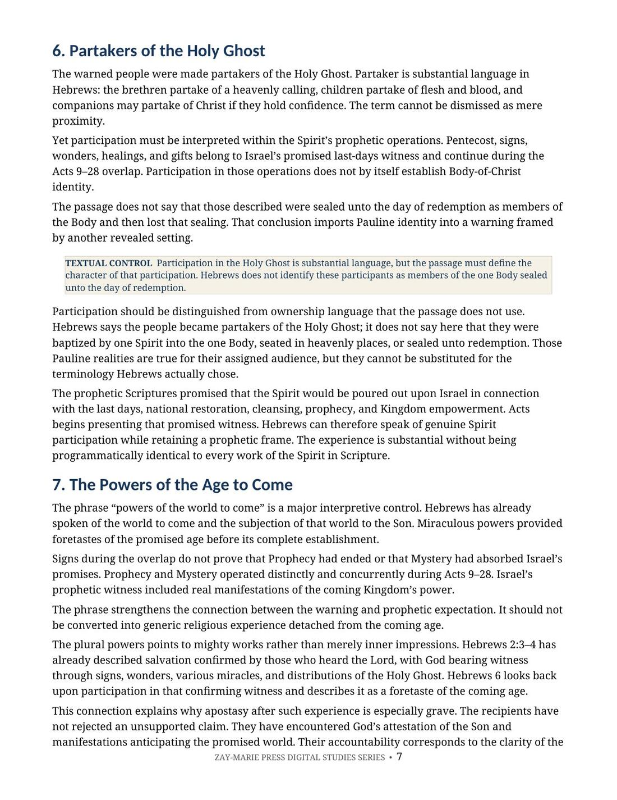
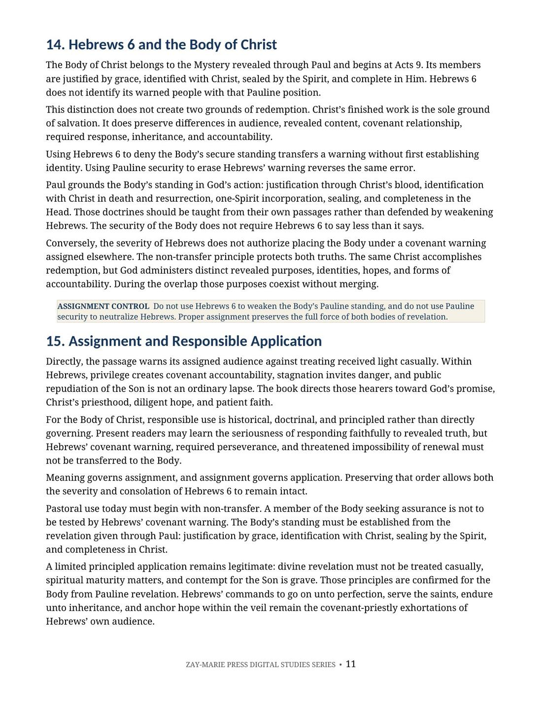
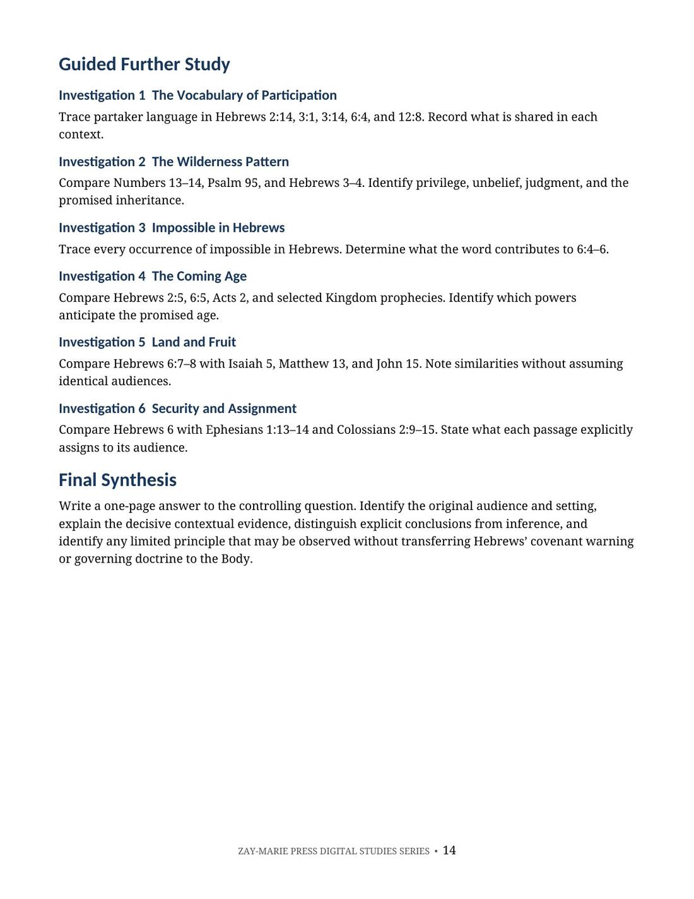

The Warning of Hebrews 6:4–6
Enlightened, Tasting the Heavenly Gift, Falling Away, and the Impossibility of Renewal
A Biblical Examination of Hebrews 5:11–6:20, Covenant Accountability, Apostasy, and Responsible Application
Hebrews 6:4–6 describes people who were enlightened, tasted the heavenly gift and the good word of God, became partakers of the Holy Ghost, experienced powers of the age to come, and then fell away.
This study reads the warning within Hebrews’ own Israelite, covenantal, priestly, and prophetic world, follows the argument from immaturity through warning to hope, and distinguishes its assigned accountability from the Body’s standing revealed through Paul.
Read the Warning Within Hebrews’ Own Argument
The warning does not stand alone. It grows from the rebuke for dullness of hearing, the call to move beyond foundational instruction, and the book’s wider pattern of privilege, accountability, endurance, and promised inheritance.
This study interprets each description in Hebrews 6:4–6, the impossibility of renewed repentance, the land illustration, the “better things” that follow, and the anchor of hope before addressing assignment and responsible application.
Follow the Warning From Context to Assignment
Hebrews’ Audience
Locate the warning within the book’s Israelite, covenantal, priestly, and prophetic setting.
Dullness and Maturity
Connect Hebrews 5:11–6:3 to the warning and the summons to go on unto perfection.
Privileged Experience
Examine enlightened, tasted, partakers, the good word, and powers of the coming age without weakening their force.
Falling Away
Define apostasy from the passage’s language of repudiation, public shame, and renewed repentance.
Land and Fruit
Use the rain, fruit, thorns, rejection, and burning illustration as the inspired explanation of the warning.
Assignment Control
Preserve the warning’s covenant force without making it govern the Body’s Pauline standing.
Trace the Warning Through Hebrews
Hebrews 5:11–14
Dullness of hearing, milk and strong meat, and the need for mature discernment.
Hebrews 6:1–3
The foundational doctrines and the summons to go on unto perfection.
Hebrews 6:4–6
Enlightenment, participation, falling away, and the impossibility of renewal.
Hebrews 6:7–8
Rain upon the land, useful fruit, thorns, rejection, and burning.
Hebrews 6:9–12
Better things, labour of love, diligence, hope, faith, and patience.
Hebrews 6:13–20
God’s oath, Abraham’s inheritance, the anchor of hope, and Christ’s priesthood.
Hebrews 3–4
Wilderness privilege, unbelief, promised rest, and the exhortation to endure.
Hebrews 10; 12
Companion warnings that confirm the book’s recurring pattern of accountability.
Meaning Governs Assignment
“The warning must be taught in its assigned setting; it must not govern the Body’s assurance or be used to threaten loss of Pauline standing.”
The passage presents real privilege and real covenant accountability. Preserving that severity does not require transferring Hebrews’ warning to the Body of Christ.
Preview the Study Before You Purchase
Click any page to enlarge it for reading.
{kind=link}

Learning Outcomes and Study Outline
Begin with measurable outcomes and a clear route through audience, warning, illustration, assignment, and application.
{kind=link}

Participation and the Coming Age
Examine substantial spiritual privilege without automatically assigning Body identity.
{kind=link}

Hebrews 6 and the Body of Christ
Distinguish the warning’s assigned audience from the secure standing revealed through Paul.
{kind=link}

Guided Further Study
Extend the study through six investigations and a final synthesis controlled by meaning and assignment.
A Focused Study Built for
Understanding and Teaching
Contextual Reading
Read Hebrews 5:11–6:20 as one argument from immaturity through warning to hope.
Foundational Doctrines
Examine the six foundational teachings within their stated biblical setting.
Phrase-by-Phrase Exposition
Interpret the five descriptions of privilege and the condition of falling away.
Land Illustration
Follow the inspired explanation of rain, fruit, thorns, rejection, and burning.
Companion Warnings
Compare Hebrews 3–4, 10, and 12 without duplicating the Hebrews 10 study.
Pauline Contrast
Establish the Body’s standing from Pauline revelation without weakening Hebrews.
Application Boundaries
Separate direct assignment, historical and doctrinal use, limited principle, and illegitimate transfer.
Teaching and Discussion Tools
Use the summary, distinctions, Scripture tracing, review questions, teaching outline, and guided further study.
The Warning of Hebrews 6:4–6
Digital PDF · For personal use
Want More Than a Focused Study?
Digital Studies examine particular biblical subjects and difficult passages. The 40-lesson Biblical Hermeneutics course teaches a complete, repeatable method for establishing meaning in context, determining proper assignment, and making responsible application.